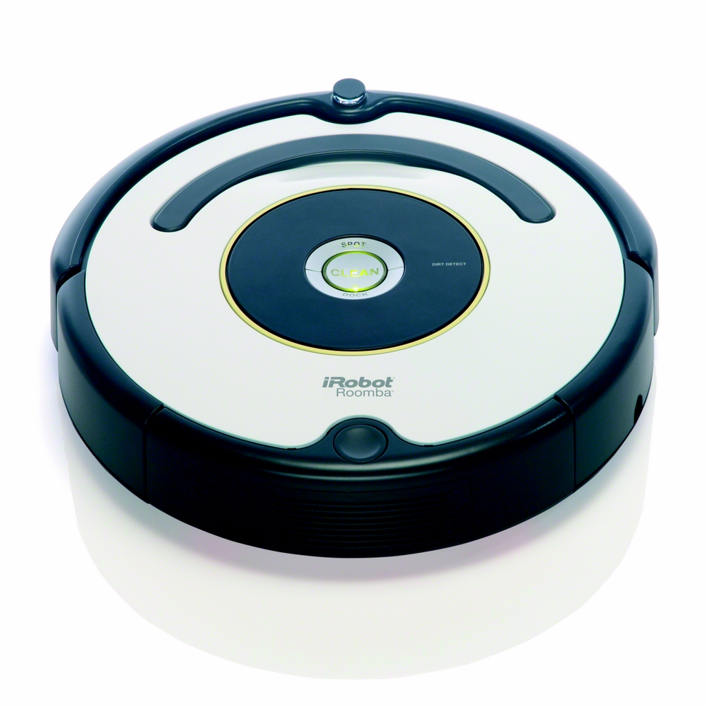

Les robots domestique, qui sont des robots de services, sont ceux que l’on retrouve le plus dans notre vie quotidienne. Ils ont pour but d’aider aux tâches ménagères comme la vaisselle, le repassage et le nettoyage. En 2006, ils sont au nombre de 3 540 000.
